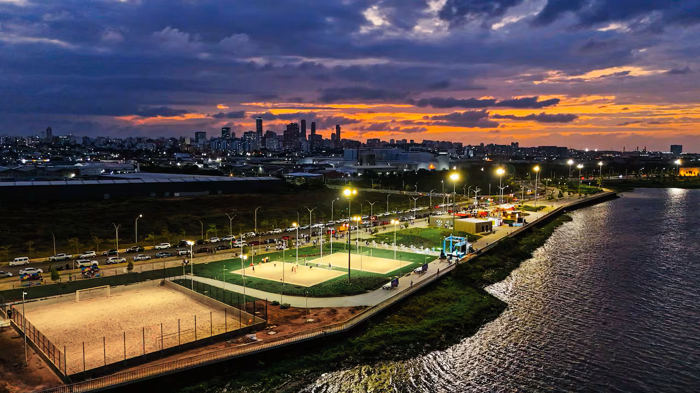

Universidad Libre
Facultad de Ingeneria
2026 Valery Diaz. Todos los derechos son reservados

"Donde el río se abraza con el mar y el progreso no se detiene." Barranquilla es la capital de la alegría y el motor del Caribe colombiano. Estratégicamente ubicada en la desembocadura del río Magdalena, la ciudad ha sabido capitalizar su herencia portuaria para convertirse en un polo de desarrollo inmobiliario y energético sin precedentes. En 2026, la "Arenosa" ya no solo es famosa por su Carnaval, Patrimonio de la Humanidad, sino por su visión de cara al río con el Gran Malecón y su apuesta por el hidrógeno verde. Es una ciudad que respira progreso, brisa marina y una calidez humana que siempre mantiene las puertas abiertas al comercio y al turismo mundial..
El Centro de Convenciones Puerta de Oro recibe desde hoy a delegaciones de 20 países interesados en la oferta hotelera y logística del Caribe colombiano. El evento espera concretar negocios por más de 50 millones de dólares en sectores como el turismo de cruceros y eventos corporativos. El Gran Malecón del Río sigue siendo la principal carta de presentación, recibiendo una inversión adicional para la creación de una zona de teatros al aire libre y parques tecnológicos para niños.

Debido al fenómeno de vientos alisios que ha generado ráfagas de hasta 65 km/h, las autoridades náuticas han restringido el ingreso de embarcaciones de gran calado durante la noche. Por seguridad, los buques que superen los 9 metros de calado deben esperar turno en zona de fondeo hasta que las condiciones de oleaje en la desembocadura del Río Magdalena mejoren. Se recomienda a los operadores portuarios agilizar los cargues durante el día para minimizar el impacto en el comercio exterior..

Universidad Libre
Facultad de Ingeneria
2026 Valery Diaz. Todos los derechos son reservados